前端後端與設計包山包海，超過四年以上開發經驗
PlurkCustoms 是我從個人需求出發，最後真正長成社群產品的代表作之一。最初它只是為了改善 Plurk 自訂表情功能的數量限制與使用效率，但隨著愈來愈多人開始使用，我也持續把它擴充成更完整的工具：包括表情管理、快速輸入、備份機制，以及更順手的操作流程。
這個專案對我很重要，因為它讓我第一次清楚感受到：一個看似很小的使用者痛點，只要切得夠準、做得夠順，就可能發展成被大量使用者長期依賴的產品。它後來成為許多 Plurk 使用者日常不可或缺的擴充工具，也讓我開始更有意識地思考產品演進、易用性與維護成本之間的平衡。
噗浪卡卡 ｜ 原始碼：GitHub/PlurkCustoms
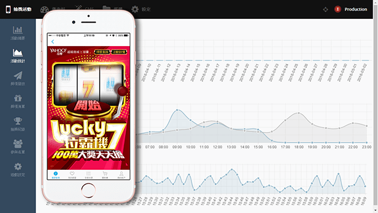
Yahoo 商城活動這類專案，對我來說更像是商業實戰中的一種節奏訓練。它不像個人作品那樣有完整的技術敘事或長期演化脈絡，但非常考驗在既定平台、既定時程與既定活動目標下，快速整理需求並把頁面做準的能力。
這類型的案子通常需要在相對短的時間內完成企劃轉譯、視覺整合、前端實作與活動頁細節處理，重點不是做出一個龐大的系統，而是把商業訊息、使用者操作與頁面節奏收斂成一個明確而有效的成果。
它未必是整份作品集中最有個人色彩的作品，但很能補足我在商業案中的另一面：在限制清楚、節奏快速的環境裡，穩定地把東西做出來。
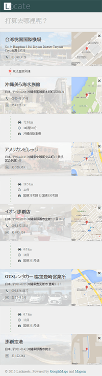
Locate 是一個為日本自駕旅行情境設計的小工具。它的核心目標很單純：讓使用者在輸入目的地後，能更快取得地址、電話與 Mapcode 等導航所需資訊，減少旅途中在多個網站與 App 之間來回查找的成本。
這個作品對我來說的價值，不只在於技術實作，而在於它來自一次真實旅行中的不便與觀察。當時我找不到一個足夠直覺、又適合手機操作的 Mapcode 查詢工具，因此回國後用一週左右的時間，一邊摸索 React，一邊把需求整理成可實際使用的產品原型。
它不是為了展示框架而做，而是從使用情境出發，再回頭選擇技術來完成。即使今天不再把它視為需要持續維護的產品，它仍然很能代表我從真實問題出發、快速做出可用工具的工作方式。
Sheepy 是一個我一直很喜歡的個人作品。它想解決的不是單純的「另存網頁」，而是更進一步地保存使用者當下所看到的頁面狀態，讓動態頁面、登入後畫面，甚至部分 Web App 的視覺結果，都能被攜帶與重現。
這個專案的起點，是我對瀏覽器儲存能力邊界的好奇：如果傳統的存檔方式無法完整保留互動狀態，那有沒有可能設計一套更接近「畫面快照 + 狀態封裝」的做法？Sheepy 就是在這個問題意識下誕生的。
它很有我的風格：從一個不太被正面處理的技術問題出發，試著找到一套實際可運作的方法，然後把它包裝成一般使用者也能理解與操作的工具。對我來說，這不只是一個瀏覽器擴充套件，而是一個對「網頁可攜性」的具體實驗。原始碼：GitHub/chrome-sheepy
Eatgo Cafe 是一個以「找咖啡廳」為核心需求的內容型產品。我們希望使用者不只是被動閱讀推薦內容，而是能根據捷運站、店家特色與實際情境，更快找到適合自己的咖啡廳；在手機版上，也進一步把資訊收斂成更直接的操作，例如一鍵打開地圖導航。
這個案子的難點，在於前期幾乎沒有完整的資料結構與後台規劃，但業務端又需要一個能快速開始運作的產品。我最後選擇把資料維護建立在 Google Spreadsheet 上，先把資料格式與工作流程定出來，而不是急著做一套昂貴但不成熟的後台。後續隨著店家資料逐漸增加，團隊也能沿用同一套方式維護內容。
對我來說，這個作品很能代表一種我很熟悉的工作情境：當需求模糊、資料凌亂、時間有限時，先想辦法把系統整理到「能運作、能維護、能擴充」，再逐步把產品做實。
在逸客走吧旅行社工作期間，我負責開發前台訂房系統，並隨著業務規模成長持續擴充功能。這個系統從早期少量房源的基本預訂流程，逐步演進到能處理多房型、多附加服務、不同民宿規則，以及多間房同步預約等更複雜的情境。
這個專案的挑戰不只是把訂房流程做出來，而是如何在快速變動的商業規則下，讓系統仍然維持可用、可調整、可擴充。除了前台體驗之外，後期我也參與了管理介面的改善，包括房務管理、批次操作與行事曆同步，讓業者與客服在日常使用上都更順手。
它不是一個炫技型作品，但很能代表我如何面對真實商業需求：在不斷增加的限制、例外與營運壓力中，把產品逐步整理成更穩定的系統。
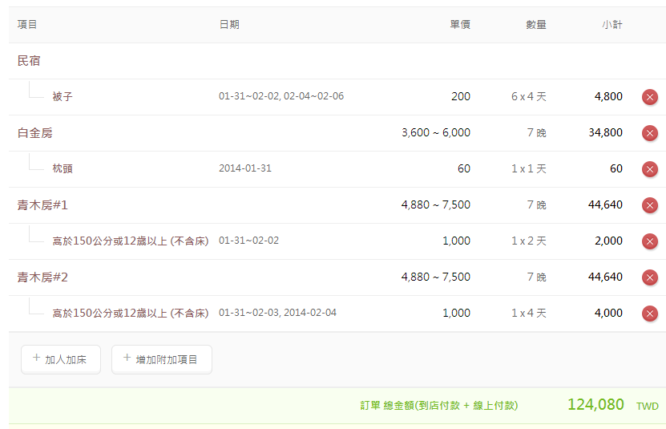
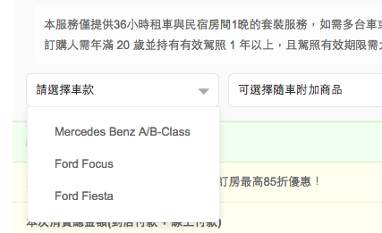
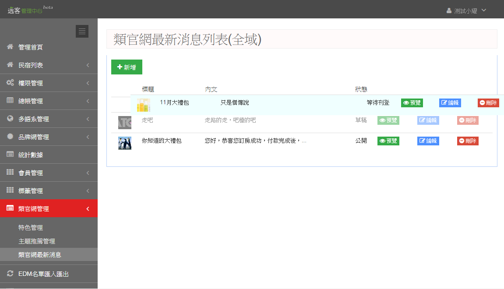
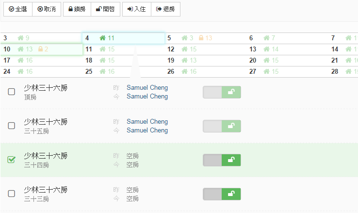
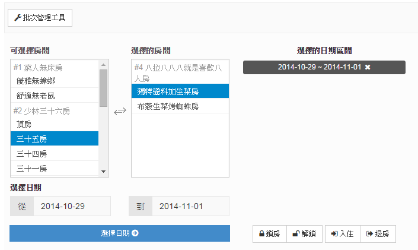
Discover Emoticons 是我在資料探勘課程中延伸出來的實驗作品，使用 Apriori 方法探索噗浪表情符號之間的關聯。它比較偏向概念驗證與學習性質，但也反映了我當時對資料分析與使用者行為模式的興趣。
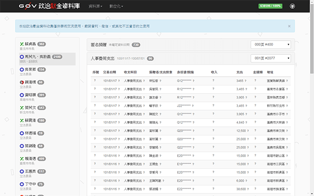
G0V 政治獻金資料庫是我參與公民科技協作的一個代表性作品。這個計畫的核心，是把原本存在於紙本資料中的政治獻金資訊，透過切圖、群眾辨識與資料整理，逐步轉成可查詢、可分析的數位資料。
這個專案對我來說很有意義，因為它不是單純的網站開發，而是資訊整理、協作流程與公共議題交會的成果。它也讓我更具體地體會到：技術不只是拿來做產品，也可以成為讓資料更透明、讓公共討論更有基礎的工具。
Firefly Map 是一個以季節性活動為背景的互動宣傳頁，結合地圖操作、區域導覽與景點資訊整理，幫助使用者更直覺地探索螢火蟲觀賞地點與住宿相關內容。
這個頁面的核心，不只是把資訊放上網站，而是把使用者的瀏覽方式轉換成更自然的探索流程：從地區開始，再往下看到景點與住宿內容，讓活動導覽不再只是靜態列表，而更接近真實規劃行程時的思考方式。
它雖然是一個規模不大的專案，但很能代表我處理內容型網頁的方式：在有限時間與明確商業目標下，把資訊架構、互動設計與視覺表現壓縮成一個可用且有記憶點的頁面。
瀏覽頁面
｜ jVectorMap Taiwan
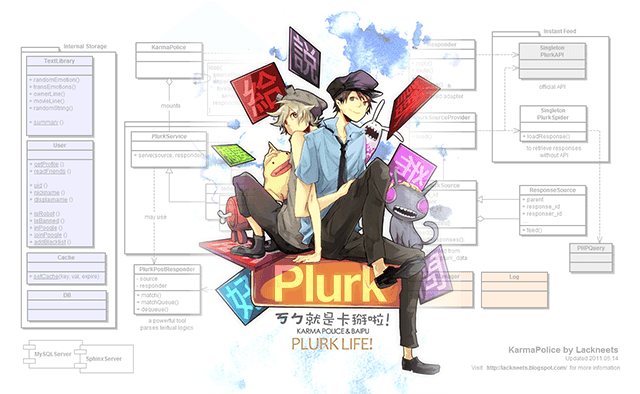
KarmaPolice 是我早期最具代表性的個人作品之一。它最初只是我為了方便自己處理線上工作與伺服器操作而做的機器人，後來逐漸演變成能與大量使用者互動的公共角色，甚至發展出鮮明的人格與社群文化。
在當時的環境裡，它不只是「會回話的 bot」，而是一個具備中文互動邏輯、連續對話能力，以及明確角色感的系統。它從自用工具一路成長成多人共同記住、共同創作、甚至被二次創作的角色，這件事對我影響很深。比起單純把它當成技術作品，我更傾向把它看成一個在社群裡真正活過的數位角色。
卡馬警衛的重要性，不只在於它做得早，也不只在於技術難度，而在於它同時結合了工具性、互動性與角色感。如果說有哪個作品最能代表我早期對互動產品、社群參與與數位角色設計的想像，卡馬警衛一定是其中之一。
Cloud Bookmark 是一個從真實使用需求出發的小工具。它的目標很單純：提供一個簡單的入口頁，讓使用者能整理與管理常用網站連結，而不只是把書籤散落在瀏覽器裡。
這個專案有趣的地方，在於它延伸到網站資訊抓取與編碼判斷的問題。當時我需要處理一些非 Unicode 編碼的頁面資料，因此也做了一些偏工程性的嘗試，去判斷資料可能的語言與編碼類型。它不是大規模產品，但很能反映我處理小工具時的習慣：先把問題拆小，再補足必要的技術細節，讓工具能真的被使用。
台北景點好手氣是一個為活動情境設計的小型後端工具，目的是在特定限制下，自動產生可行的景點路線。它的重點不在完整產品，而在於如何把演算法與實際活動需求接在一起，快速做出可測試的原型。
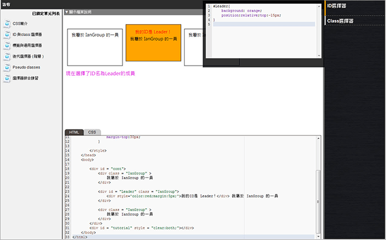
CodeShare 是學生時期的畢業專題之一，目標是提供一個能線上練習與測試網頁開發的學習平台。它結合了教學設計、即時回饋與簡單的沙盒執行概念，雖然現在看起來仍帶有明顯的研究與原型色彩，但已經可以看出我對「工具如何幫助學習」這件事的興趣。
大學二年級在設計學院完成的團隊畢業製作。不同於主流的社群媒體，聲色場所使一個以聲音為基礎的社群，並且用色彩來記錄情緒變化。
決定製作這個時，完全沒想到錄製聲音會是最大難題，但答案就在當時最新版 Flash 10.1 beta 的 Alchemy 技術，可以使用 C-based LAME 編碼器。
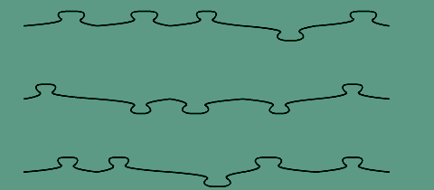
製作這個只有兩個重點：切割、拼合。碎片利用動態貝茲曲線繪製圖層並以點陣圖填色產生，碎片的拼合為了做出想要的效果，內建的 hitTest 並不管用，必須自己實作碎片的管理方式，用絕對座標來管理所有碎片，還記得為了這個接連三天睡前在床上思考作法。
這是一個簡單的經典棋盤遊戲叫做點格棋，遊戲AI的精神與趣味在於將人的思考模式轉換為程式邏輯，差別在於電腦判斷完所有可能的時間不花半秒鐘，當然還有種更進階的人工智慧叫做策略。
另外我還用 Wordpress 幫許多中小企業
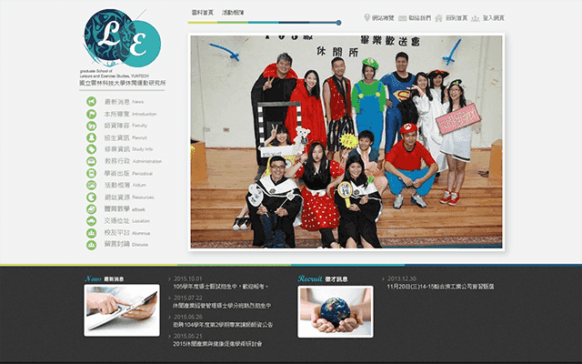
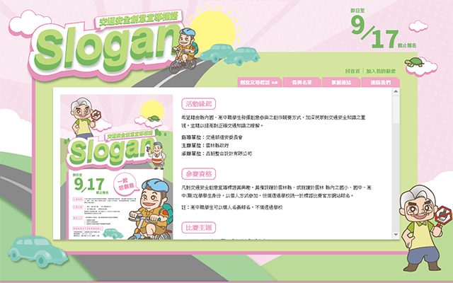
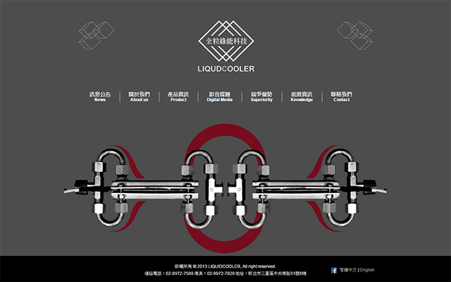
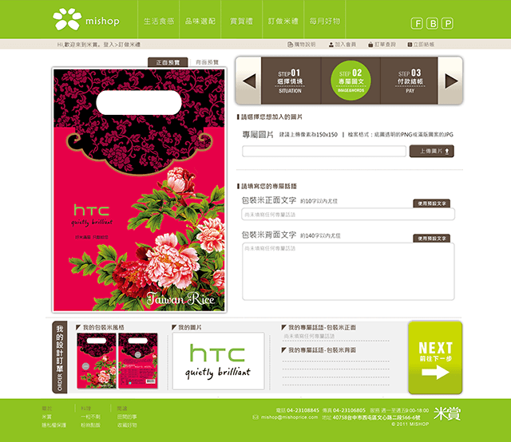
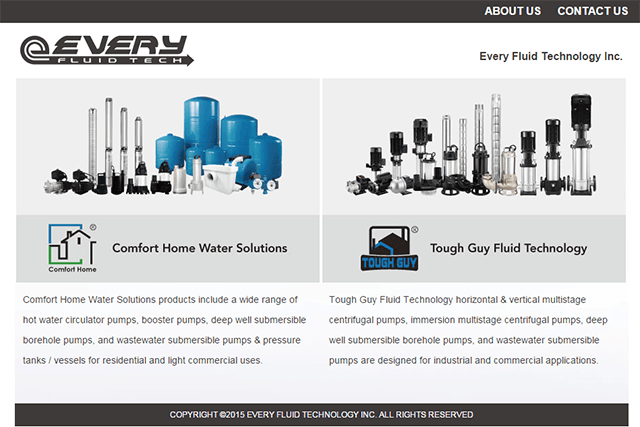
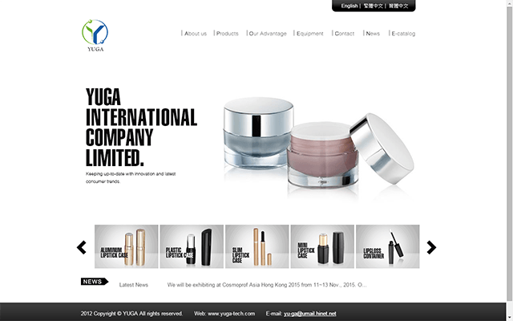
以及其他有的沒的......
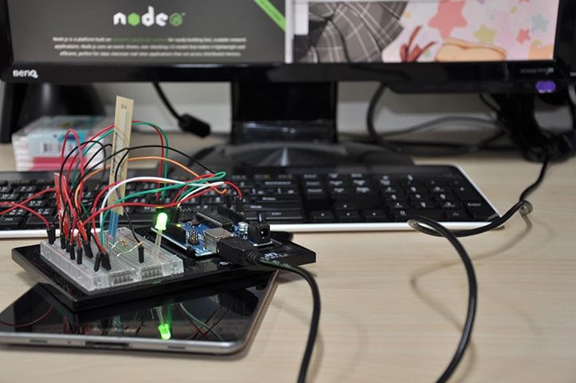
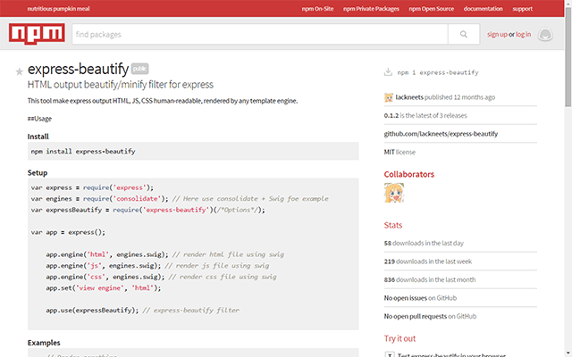